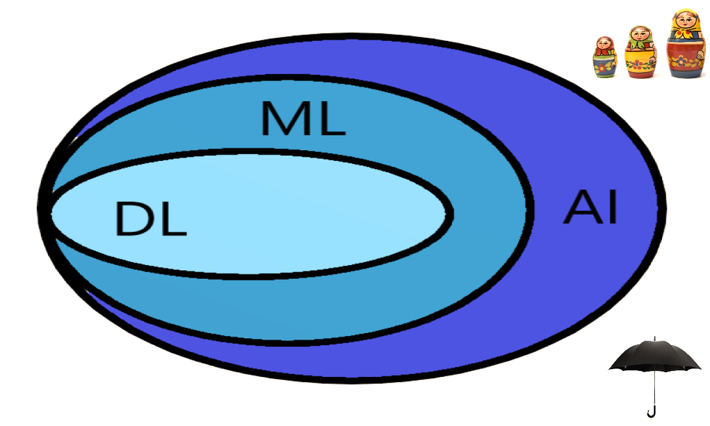

Implementing AI & Deep Learning in R, the well-known open-source platform for Data Science and Machine Learning
Dr Andrey Kostenko
May 17, 2019
2nd Applying Artificial Intelligence and Deep Learning for Enterprises Conference
Pan Pacific, Singapore
Agenda
Definitions & examples
- What is Artificial Intelligence?
- What is Machine Learning?
- What is Deep Learning?
R ecosystem
- R
- RStudio’s IDE for R
- RStudio’s other products
- Python in RStudio
R for Machine Learning
- caret
- mlr
- parsnip
- xgboost
- lightgbm
- catboost
R for Deep Learning
- h2o
- mxnet
- keras
- tensorflow
R for eXplainable AI
- lime
- shapper
- DALEX
- iml
R models in production
- API builders
- format converters
- R in cloud
- Docker for R
Take-home message
- Is R good for DL, ML & AI?
Artificial Intelligence
Machine Learning
Deep Learning
Artificial Intelligence is an umbrella term

AI defined
- AI is a computer system able to perform tasks that normally require human intelligence, such as visual perception, speech recognition, decision-making, and natural language translation.
- AI is the capability of a machine to imitate intelligent human behavior.
AI exemplified
considering only those not directly falling into ML or DL category
- AI can be a pile of if-then statements, which are rules explicitly programmed by a human hand. Collectively, these if-then statements are sometimes called rule engines, expert systems, knowledge graphs or symbolic AI .
- AI includes evolutionary computation, often associated with genetic algorithms, successfully used as a competitive alternative for training Deep Neural Networks for Reinforcement Learning.
- Skynet, a fictional artificial neural network-based conscious group mind and artificial general intelligence system from the terminator series.
{kind=link}
ML defined
- Arthur Samuel (1959): Machine Learning is the field of study that gives computers the ability to learn without being explicitly programmed.
- Machine learning is the science of getting computers to act without being explicitly programmed.
- Machine learning is the concept that a computer program can learn and adapt to new data without human interference.
- Machine learning is based on algorithms that can learn from data without relying on rule-based programming.
- Machine learning algorithms can figure out how to perform important tasks by generalizing from examples.
ML exemplified
considering only those not directly falling into DL category
- linear models (LM), generalised linear models (GLM) for non-Gaussian outcomes, generalised additive models (GAM) for non-linear effects etc.
- decision trees, as a powerful and interpretable alternative to linear models & algorithms; ensembles of decision trees for regression and classification (bagging, boosting)
{kind=link}
DL defined
Ian Goodfellow and Aaron Courville in their book titled “Deep Learning” define Deep Learning in terms of the depth of the architecture of the models:
The hierarchy of concepts allows the computer to learn complicated concepts by building them out of simpler ones. If we draw a graph showing how these concepts are built on top of each other, the graph is deep, with many layers. For this reason, we call this approach to AI deep learning.
The above is often simplified to:
Deep learning is the implementation of neural networks with more than a single hidden layer of neurons.
DL exemplified
A key difference from ML is the ability to perform automatic feature extraction from raw data, also called feature learning.
- Convolutional Neural Networks (CNN) learn these features for computer vision applications, such as image classification, object detection, semantic segmentation etc.
- Recurrent Neural Networks (RNN) learn these features for natural language processing tasks, such as sentiment analysis, next word prediction, chatbots, speech recognition (Alexa, Siri, Google home), machine reading comprehension, machine translation etc
- CNN and RNN can be used jointly for automatic image captioning, video processing tasks, e.g. human activity recognition
R ecosystem
R
- historically, a programming language for statistical computing and graphics 1st release 1995 / stable beta in 2000 / now 4-5 releases every year
- highly extensible through the use of user-submitted packages
nrow(available.packages())returned 14127 CRAN packages not counting Bioconductor repository, github, gitlab etc - now, R is more than just a programming language, it’s more like an ecosystem with a very active community very active community
RStudio
- free and open-source platform-independent IDE for R
- first public beta in Feb 2011 / v1.0 in Nov 2016 / v1.2 in Apr 2019
- available in two editions: RStudio Desktop and RStudio Server
- commercial products enterprise-ready professional software for R
- features integration with version control tools, databases etc
- tools to streamline and simplify creation of R packages
- interactive tools for code profiling, testing, debugging etc
RStudio’s other products
- R packages RStudio team contributes code to many R packages
- tidyverse opinionated collection of R packages for data science
- shiny Easy web applications in R
- leaflet interactive maps in R
- r2d3 R Interface to D3 Visualizations
- sparklyr interface to Apache Spark
- RStudio Connect, RStudio Package Manager
- Databases makes it easy to work with databases in R
- bookdown lets you publish your Rmarkdown book for free
- webinars, cheatsheets, blog etc
- rstudio::conf RStudio’s yearly conference
Python in RStudio
Two major data science languages: Python and R
- RStudio 1.2 comes with support for Python, SQL, Stan, D3
- One can now enjoy pandas and seaborn plots in RStudio!
- RStudio offers interface to Python via R package reticulate
- RStudio offers interface to Python’s major DL libraries
- One can now enjoy Keras and TensorFlow in RStudio!
R for Machine Learning
Resources:
caret
- short for Classification And REgression Training
- a unified R interface to 160+ different models / algorithms
- in development since 2005 by Max Kuhn & Co
- offer data splitting, pre-processing, feature selection, model tuning using re-sampling, variable importance estimation etc
- convenient to learn a single framework’s syntax to get predictions from many completing models across different R packages
mlr
- short for Machine Learning in R
- re-sampling methods like bootstrapping and cross-validation
- extensive visualizations (e.g. ROC curves, predictions etc)
- variable selection with filters and wrappers
- Hyper-parameter tuning using different optimization strategies
- cost-sensitive learning, threshold tuning and imbalance correction
- mlr developers are now working on mlr3, a clean rewrite of mlr
- http://philipppro.github.io/2018-11-9-mlr_vs_caret/
parsnip (new)
- in active development since 2018 by Max Kuhn & Co
- parsnip is a new tidymodels package to generalize model interfaces across packages, it is further development of some key ideas in caret
- single function interface for types of models, where say for linear regression, user chooses computational engine for training e.g. lm, glmnet, Spark, Stan, and Keras
- designed only to solve the interface issue, no pre-processing, model tuning, re-sampling … not designed to be a drop-in replacement for caret
- https://www.tidyverse.org/articles/2018/11/parsnip-0-0-1/
xgboost
Scalable, Portable and Distributed Gradient Boosting (GBDT, GBRT or GBM) Library, for Python, R, Java, Scala, C++ and more. Runs on single machine, Hadoop, Spark, Flink and DataFlow https://xgboost.ai/ an implementation of gradient boosted decision trees designed for speed and performance
- started by Tianqi Chen in March 2014 and became famous in 2016
- stands for “Extreme Gradient Boosting”
- built-in algos to deal with missing values, class imbalance etc
- GPU support, distributed storage & compute support, e.g. run on AWS EC2 cluster & accessing data on S3
- latest release changelog
lightgbm (Microsoft)
A fast, distributed, high performance gradient boosting (GBDT, GBRT, GBM or MART) framework based on decision tree algorithms, used for ranking, classification and other machine learning tasks. https://lightgbm.readthedocs.io/en/latest/
- First stable version in Jan 2017
- Faster training speed and higher efficiency
- Lower memory usage
- Better accuracy
- Support of parallel and GPU learning
- Capable of handling large-scale data
catboost (Yandex)
A fast, scalable, high performance Gradient Boosting on Decision Trees library, used for ranking, classification, regression and other machine learning tasks for Python, R, Java, C++. Supports computation on CPU and GPU. https://catboost.ai
- Open-sourced in Apr 2017
- Best in class prediction speed
- Support for both numerical and categorical features
- Fast GPU and multi-GPU support for training out of the box
- review of the latest releases Good news for R users. We implemented GPU support in our R package.
R for Deep Learning
Resources:
h2o
H2O is an open source, in-memory, distributed, fast, and scalable machine learning and predictive analytics platform that allows you to build machine learning models on big data and provides easy productionalization of those models in an enterprise environment.
- implements multi-layer perceptron & autoencoders
- R, Python, Flow UI use h2o via REST API
- CNNs and RNNs through third-party integrations
- DL capabilities are limited, mostly classical ML at scale
- h2o DL manual
MXNet
MXNet is a machine-learning framework with APIs is languages such as R, Python and Julia which has been adopted by AWS.
- Deep Learning framework of choice at AWS
- Limited adoption by the established and aspiring data scientists e.g. at kaggle.com, as compared to e.g. Keras, pytorch and fastai
- MXNet R tutorials
Keras
Keras is a high-level neural networks API developed with a focus on enabling fast experimentation. Being able to go from idea to result with the least possible delay is key to doing good research.
- Absolutely the best choice for DL an R user can currently enjoy!
- Broad adoption in the industry and in the research community
- Tons of shared code on the Internet e.g. at Kaggle
- Development is backed Google, Microsoft, Nvidia and AWS
- Allows the same code to run on CPU or on GPU, seamlessly
- Built-in support for CNN, RNN, RNN, LSTM, GRU etc
- Flexibility to build virtually any custom deep learning model
TensorFlow
The R interface to TensorFlow lets you work productively using either high-level APIs or the core TensorFlow API.
- RStudio’s TensorFlow for R blog is pretty active
- tfruns: Tools for TensorFlow Training Runs
- tfdeploy: tools designed to make exporting and serving TensorFlow models easy.
NB: while TensorFlow models are typically defined and trained using R or Python code, it is possible to deploy TensorFlow models in a wide variety of environments without any runtime dependency on R or Python
R for eXplainable AI
interpretable-ml-book Making Black Box Models Explainable
These 4 CRAN packages are in active development:
- lime is an R port of the Python library of the same name
- shapper is an R wrapper of SHAP python library
- DALEX stands for Descriptive mAchine Learning EXplanations
- iml stands for Interpretable Machine Learning in R
Shapper is a part of the DALEX universe. The DALEX universe is a part of the DrWhy.AI universe, the collection of tools for Explainable AI (XAI). It’s based on shared principles and simple grammar for exploration, explanation and visualisation of predictive models.
lime
- it explains the predictions of black box classifiers by determining a small set of features in the original data that has driven the outcome of the prediction for any given prediction and any given classifier.
- supports models created with caret, parsnip and mlr
- supports explaining image and text models, e.g. by highlighting the relevant areas in an image or important words.
- unsupported models can be supported by adding a predict_model and model_type method for the given model
shapper
- A unified approach to explain the output of any ML model.
- R wrapper over Python’s SHAP explainer for black-box models
- calculate influences of variables on particular observation, using Shapley values, technique borrowed from game theory.
- for each prediction SHAP gives each feature an importance value
- SHAP approach is also implemented in iml or shapleyR
- SHAP can be applied to images, text & tabular data
DALEX
- models based on boosting, bagging or NN are true black boxes
- it is hard to trace the link between features and model outcomes.
- DALEX tools help understand how complex models are working
- supporting keras, parsnip, caret, mlr, h2o, xgboost, catboost etc
- cross-comparison of of model developed in R, Java and Python
- dump trained model with pickle in Python and pick it up with reticulate in R for prediction & explanations
iml
- interprets the behaviour and explains predictions of ML models
- implements model-agnostic interpretability methods, meaning they can be used with any machine learning model:
- feature importance
- individual conditional expectation plots (ICE)
- accumulated local effects
- tree surrogate
- LocalModel: Local Interpretable Model-agnostic Explanations
- Shapley value for explaining single predictions
R models in production
CRAN task view ModelDeployment reviews R packages, grouped by topic, that provide functionalities to streamline the process of deploying models to various production environments.
R API builders
- R package plumber helps creating a web API by merely decorating your R source code with special comments.
- R package jug is a simple API-builder web framework.
- R package RestRServe is a web API framework for building high-performance microservices and app backends.

R converters
- R package R2PMML provides the interface to Predictive Model Markup Language (PMML) format
- R package onnx provides the interface to Open Neural Network Exchange i.e. ONNX
- R package aurelius provides tools for converting R objects and syntax into the Portable Format for Analytics i.e. PFA. Check out this post for further detail.
R in cloud
AWS Sagemaker via Jupyter notebook or R Studio the latter option is possible by reticulating the Amazon SageMaker Python SDK
R package cloudml provides functionality to easily deploy models to Google Cloud ML Engine
Docker for R
Docker allows you to wrap up your R product in a self contained mini computer that can then be easily shared and run in a variety of different environments.
Docker file builds docker image which runs docker container.
The Rocker Project Docker Containers for the R Environment
Dockerfile for GPU enabled rstudio server with keras+tensorflow
to run the code from the Deep learning in R book given an NVIDIA GPU with drivers installed.
Take-home message
- R is world’s most widely used statistics programming language.
- R is great for data analysis, data visualization, data munging.
- R is a solid choice for machine learning, including deep learning.
- R is a solid choice for AI, including eXplainable AI

- R or Python? Wrong question. Why not both?
- RStudio makes the joint use of R and Python easy.
- Take the best of two worlds!
Questions?
Website:
http://andreykostenko.comLinkedIn:
https://www.linkedin.com/in/akoste01/